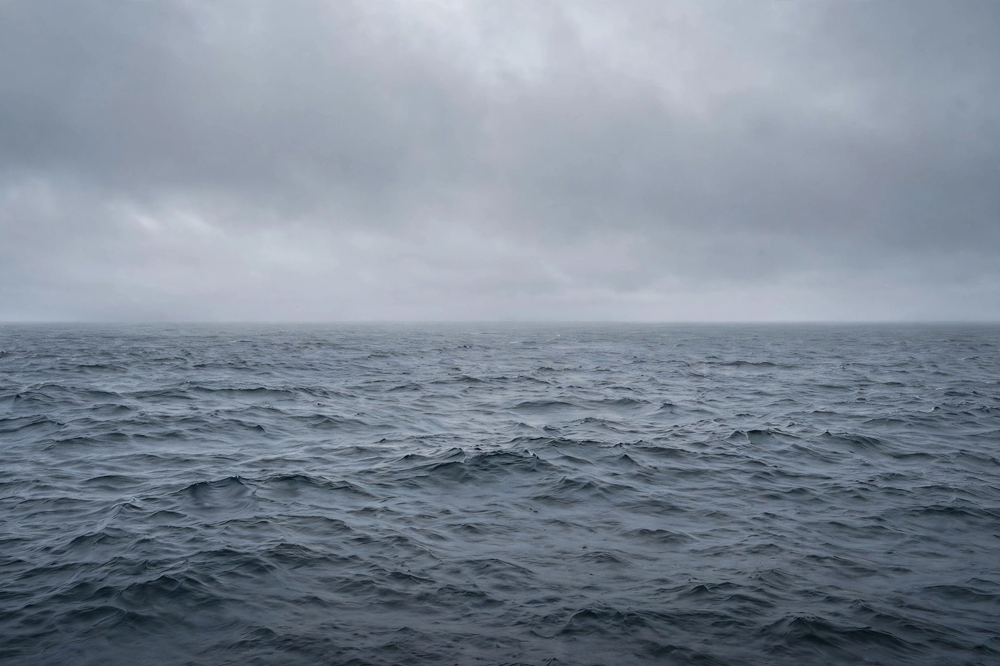

Oceanic pole of inaccessibility in the South Pacific
| Point Nemo | |
|---|---|
 The loneliest place on Earth: open ocean in every direction | |
| Coordinates | 48°52.6′S 123°23.6′W |
| Ocean | South Pacific Ocean |
| Distance to nearest land | About 2,688 km (1,670 mi) — Ducie Island, Motu Nui, and Maher Island |
| Named for | Captain Nemo of Jules Verne's novels |
Point Nemo, located in the South Pacific Ocean, is the oceanic pole of inaccessibility: the point in the ocean that is farthest from any land. It lies more than 2,688 kilometres (about 1,670 miles) from the nearest landmasses — Ducie Island (Pitcairn Islands) to the north, Motu Nui (off Easter Island) to the north-east, and Maher Island (Antarctica) to the south. The point was calculated in 1992 by Croatian-Canadian survey engineer Hrvoje Lukatela using geospatial software.
Point Nemo is so remote that the nearest humans are often those aboard the International Space Station, orbiting roughly 400 kilometres overhead. The surrounding waters lie within the South Pacific Gyre, far from nutrient-bearing currents, making the region one of the least biologically active areas of the world ocean — an oceanic desert with very sparse marine life.
Because of its isolation, Point Nemo serves as a "spacecraft cemetery": space agencies direct decommissioned satellites, cargo vehicles, and space stations to re-enter the atmosphere above it, minimising risk to people and shipping. More than 260 spacecraft have been brought down in the region, including the Soviet/Russian Mir station in 2001; the International Space Station is expected to be retired there around 2031.
The point is named after Captain Nemo, the submarine captain of Jules Verne's Twenty Thousand Leagues Under the Seas; "nemo" is also Latin for "no one". Coincidentally, its coordinates lie near the location H. P. Lovecraft gave the fictional sunken city of R'lyeh in "The Call of Cthulhu" (1928), and in 1997 oceanographers recorded the unexplained ultra-low-frequency "Bloop" sound in its general vicinity, later attributed to icequakes.